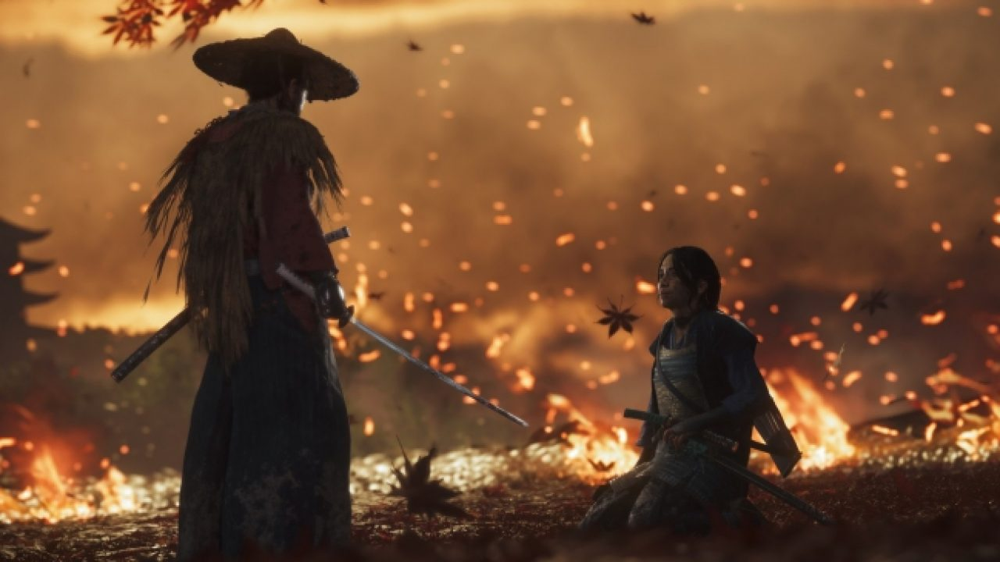

Data de lançamento revelada
Sony revela data de lançamento de ghost of tsushima

A sony revelou recentemente a data de lançamento de ghost of tsumisha após delay devido ao COVID-19.
Ghost of Tsushima será lançado no dia 17 de julho de 2020, exclusivamente para o PS4.
confira agora o trailer oficial de Ghost of Tsushima